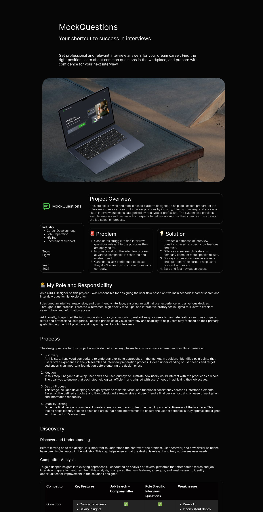
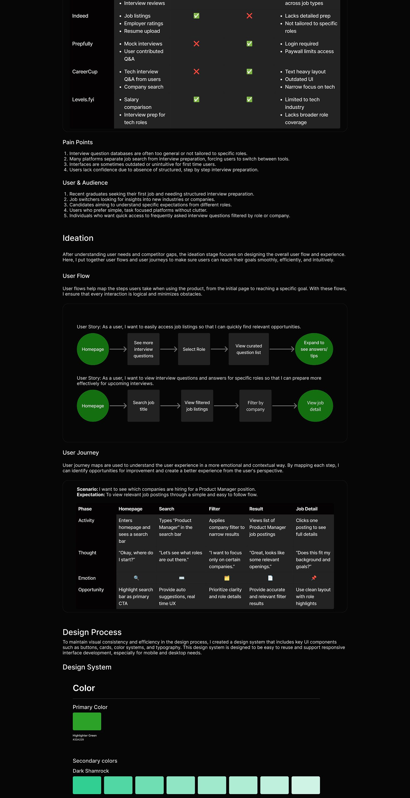
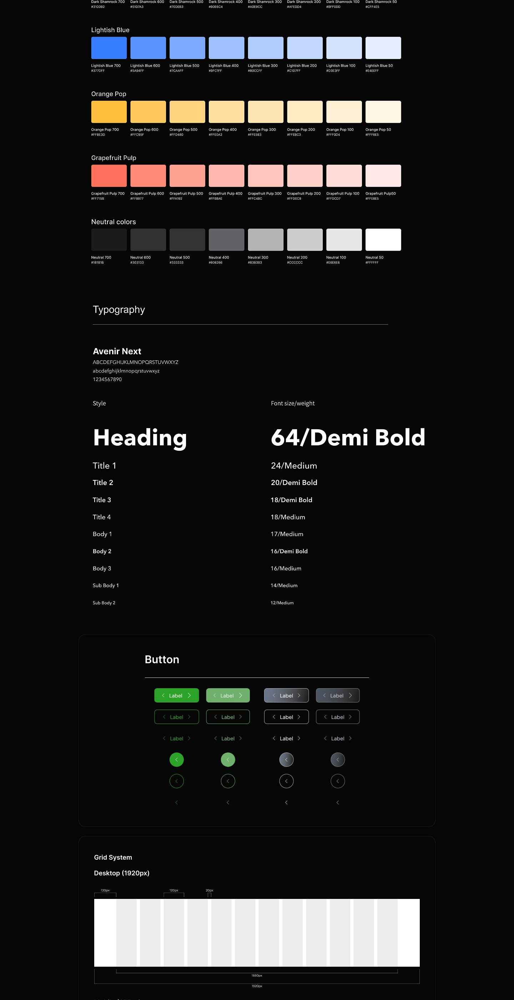
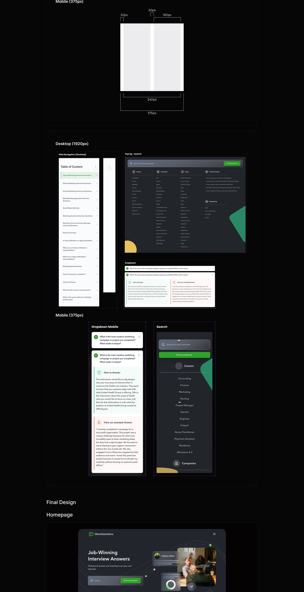
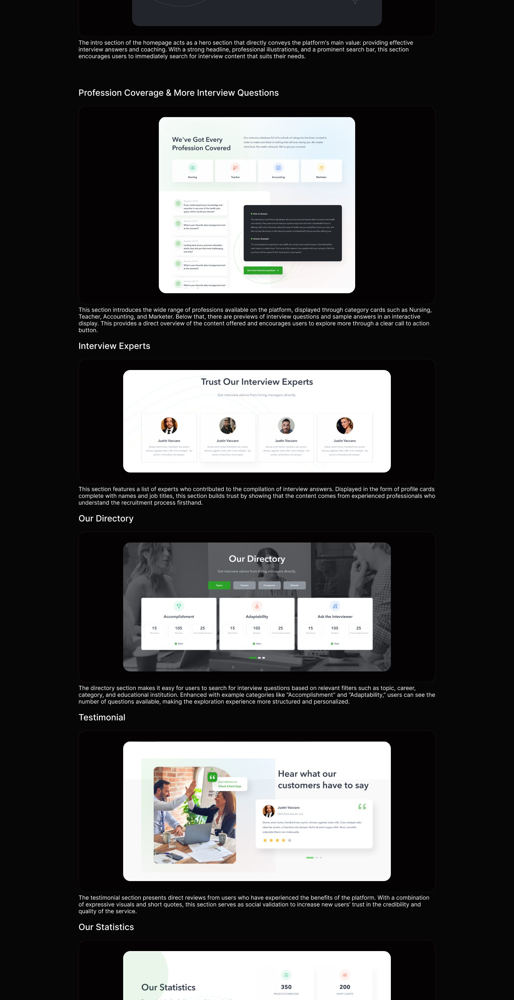
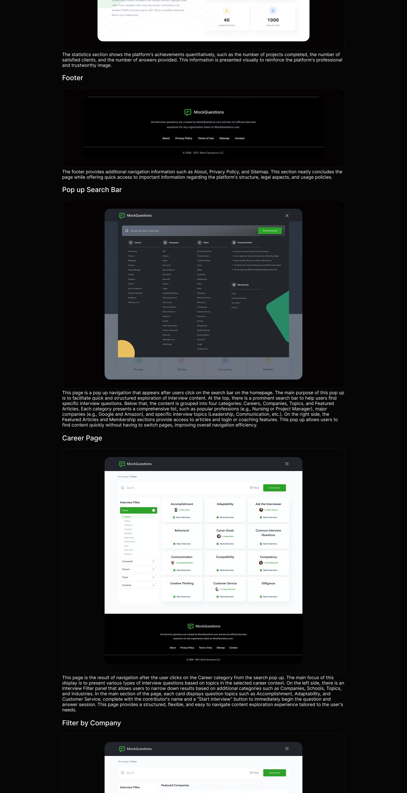
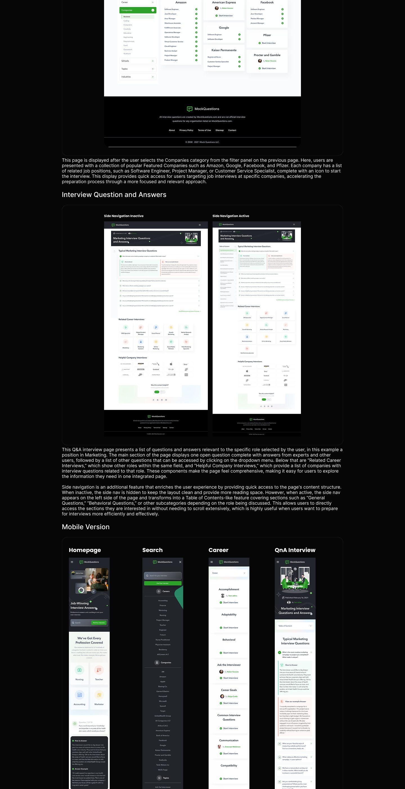
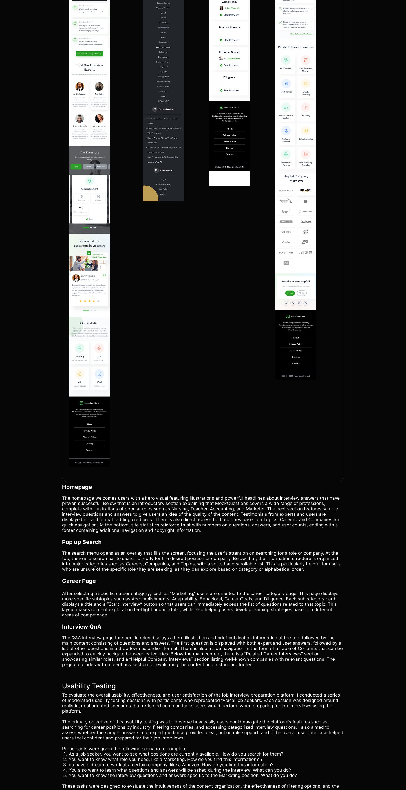
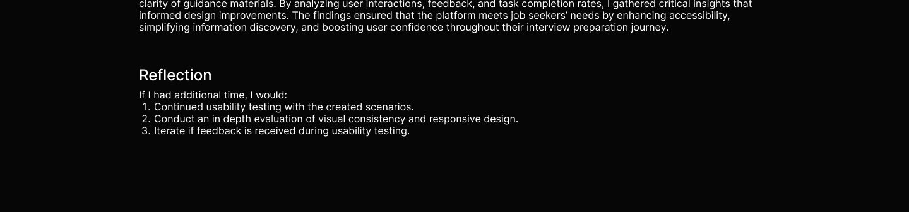

Learning platform
MockQuestions
Interview preparation with real questions and structured practice.
Overview
MockQuestions helps candidates prepare for interviews with curated question banks organized by role. The core design problem is focus: a reader deep in a question set should never lose their place, so the side navigation collapses out of the way and returns exactly where it was.
The case study spans the question and answer experience, practice dashboards, and a complete mobile version, with the reasoning annotated throughout.
Inside the case study
- User flows
- Question and answer pages
- Side navigation system
- Practice dashboards
- Mobile version
- Annotated design decisions
The case study
The full annotated board: research, flows, explorations, and final screens.








